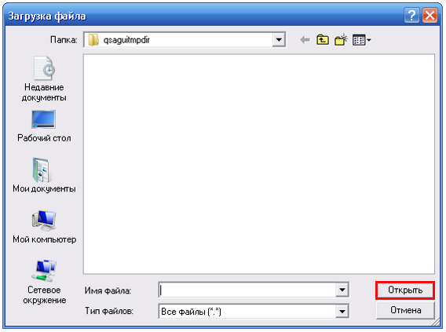

Содержание
Что такое QSAGUI?
Начало
Создание графа вызовов
Соединение графов вызовов
Очистка графа вызовов
Обновление графа вызовов
Получение списков файлов/функций
Показать граф вызовов
Настройки
|
Показать граф вызовов
Для загрузки графа вызовов используйте "Граф вызовов" -> "Открыть..." или кнопку "Открыть" на панели инструментов или сочетание клавиш "Ctrl+O".
Выберите граф вызовов для загрузки:

Вы можете выбрать несколько графов вызовов. Если Вы выбрали несколько, то они будут соединены в один граф вызовов (см. путь для сохранения в поле "Результат", Вы можете изменить его в настройках). Слева Вы увидите списки функций и файлов на вкладках.
Чтобы увидеть граф вызовов используйте "Граф вызовов"-> "Показать как...". Выберите выходной формат. Если выбираете формат "SVG", то у Вас должен быть установлен Graphviz .
Вы можете работать с вкладками, печатать и сохранять документы (см. меню "Файл"), включать "полноэкранный режим" (см. меню "Вид"), использовать поиск, очистку окон и уничтожение процессов (см. меню "Редактировать").
.
|